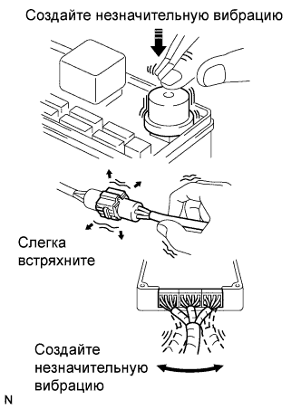
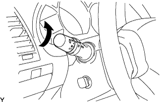

ПОИСК НЕИСПРАВНОСТЕЙ В СИСТЕМАХ, УПРАВЛЯЕМЫХ ЭБУ > ПРОЦЕДУРА ПОИСКА НЕИСПРАВНОСТЕЙ |
| СХЕМА ВЫПОЛНЕНИЯ ОПЕРАЦИЙ |
| 1.АВТОМОБИЛЬ ПОСТУПИЛ В МАСТЕРСКУЮ |
| |||||
| 2.АНАЛИЗ НЕИСПРАВНОСТИ, ЗАЯВЛЕННОЙ КЛИЕНТОМ |
Выясните у владельца, при каких условиях возникла неисправность.
| |||||
| 3.ПРОВЕРЬТЕ НАПРЯЖЕНИЕ АККУМУЛЯТОРНОЙ БАТАРЕИ |
| |||||
| 4.ПОДТВЕРЖДЕНИЕ ПРИЗНАКОВ НЕИСПРАВНОСТИ И ПРОВЕРКА DTC (ВКЛЮЧАЯ ПРОВЕРКУ ДАННЫХ ФИКСИРОВАННОГО НАБОРА ПАРАМЕТРОВ) |
Визуально проверьте жгут проводов, разъемы и предохранители на наличие обрывов и коротких замыканий.
Прогрейте двигатель до нормальной рабочей температуры.
Подтвердите признаки и условия возникновения неисправности, а затем проверьте коды DTC.
| Результат | Следующий шаг |
| DTC выводится | А |
| DTC не выводится | B |
|
| ||||
| |||||
| 5.ТАБЛИЦА DTC |
Проверьте коды DTC. Затем найдите выданные DTC в таблице DTC. Перечень цепей и/или деталей, которые могут быть неисправны, приведен в столбце "Неисправный участок".
|
|
| 6.ТАБЛИЦА ПРИЗНАКОВ НЕИСПРАВНОСТЕЙ |
Проверьте результаты, полученные при проверке признаков. Затем найдите признаки неисправности в таблице признаков неисправностей. Перечень цепей и/или деталей, которые могут быть неисправны, приведен в столбце "Предполагаемый участок".
| |||||
| 7.ПРОВЕРКА ЦЕПЕЙ ИЛИ ДЕТАЛЕЙ |
Определите неисправную цепь или деталь.
| |||||
| 8.ОТРЕГУЛИРУЙТЕ, ОТРЕМОНТИРУЙТЕ ИЛИ ЗАМЕНИТЕ |
Отрегулируйте, отремонтируйте или замените неисправные цепи или детали.
| |||||
| 9.ПРОВЕРОЧНОЕ ИСПЫТАНИЕ |
После регулировки, ремонта или замены удостоверьтесь, что неисправность более не проявляется. Если неисправность не проявляется вновь, выполните проверочное испытание при тех же условиях, при которых она возникла в первый раз.
|
| ||||
|---|---|---|---|---|---|
| АНАЛИЗ НЕИСПРАВНОСТИ, ЗАЯВЛЕННОЙ КЛИЕНТОМ |
| Что? | Модель автомобиля, название системы |
| Когда? | Дата, время, частота возникновения |
| Где? | Дорожные условия |
| При каких условиях? | Условия работы, условия движения, погодные условия |
| Как проявляется неисправность? | Признаки неисправности |
| ТАБЛИЦА ПОДТВЕРЖДЕНИЯ ПРИЗНАКОВ И ДИАГНОСТИЧЕСКИХ КОДОВ НЕИСПРАВНОСТЕЙ |
| Система | Проверка DTC (Нормальный режим) | Проверка DTC (Режим проверки) | Фиксированный набор параметров | Проверка датчиков / режим активной диагностики (проверка входных сигналов) | Параметры из Data List | Active Test | Параметры, настраиваемые пользователем |
| Система SFI двигателя 1GR-FE | ○ | ○ | ○ | - | ○ | ○ | - |
| Система ECD 1KD-FTV (для моделей с DPF) | ○ | ○ | ○ | - | ○ | ○ | - |
| Система ECD 1KD-FTV (для моделей без DPF) | ○ | ○ | ○ | - | ○ | ○ | - |
| Система ECD двигателя 5L-E | ○ | ○ | ○ | - | ○ | ○ | - |
| Система SFI двигателя 2TR-FE | ○ | ○ | ○ | - | ○ | ○ | - |
| Система круиз-контроля | ○ | - | - | - | ○ | ○ | - |
| Динамическая радарная система круиз-контроля | ○ | - | - | - | ○ | ○ | - |
| Система автоматической трансмиссии A343F | ○ | ○ | ○ | - | ○ | ○ | - |
| Система автоматической трансмиссии A750F (для моделей с 1GR-FE) | ○ | ○ | ○ | - | ○ | ○ | - |
| Система автоматической трансмиссии A750F (для моделей с 1KD-FTV) | ○ | ○ | ○ | - | ○ | ○ | - |
| Пневматическая подвеска | ○ | - | - | ○ | ○ | ○ | - |
| Кинетическая динамическая система подвески | ○ | - | - | - | ○ | ○ | - |
| Антиблокировочная система тормозов | ○ | - | ○ | ○ | ○ | ○ | - |
| Система курсовой устойчивости (для моделей с гидравлическим усилителем тормозной системы) | ○ | - | ○ | ○ | ○ | ○ | - |
| Система курсовой устойчивости (для моделей с вакуумным усилителем тормозной системы) | ○ | - | ○ | ○ | ○ | ○ | - |
| Система рулевого управления с усилителем (кроме моделей с 5L-E) | ○ | - | - | - | ○ | - | - |
| Система наклонной телескопической рулевой колонки с электроприводом | ○ | - | ○ | - | ○ | ○ | ○ |
| Система блокировки рулевого управления | ○ | - | - | - | ○ | ○ | - |
| Аудиовизуальная система (для моделей с системой навигации) | ○ | - | - | - | - | - | - |
| Аудиовизуальная система (для моделей без системы навигации) | ○ | - | - | - | - | - | - |
| Развлекательно-информационная система для задних пассажиров | ○ | - | - | - | - | - | - |
| Система навигации (для моделей с DVD) | ○ | - | - | - | - | - | - |
| Система навигации (для моделей с жестким диском) | ○ | - | - | - | - | - | - |
| Сенсорная система помощи при парковке TOYOTA (для моделей с 4 датчиками) | - | - | - | - | - | - | - |
| Сенсорная система помощи при парковке TOYOTA (для моделей с 8 датчиками) | ○ | - | - | - | ○ | ○ | ○ |
| Система помощи при парковке | ○ | - | - | - | ○ | - | - |
| Система широкоугольного монитора переднего вида | ○ | - | - | - | - | - | - |
| Система монитора бокового обзора (для моделей с системой монитора заднего вида) | ○ | - | - | - | - | - | - |
| Система монитора бокового обзора (для моделей с системой помощи при парковке) | ○ | - | - | - | - | - | - |
| Система монитора заднего вида (для моделей с системой монитора бокового обзора) | ○ | - | - | - | ○ | - | - |
| Система передачи данных LIN | ○ | - | - | - | ○ | - | - |
| Система передачи данных CAN | ○ | - | - | - | - | - | - |
| Система управления замками дверей | ○ | - | - | - | ○ | ○ | ○ |
| Система дистанционной блокировки дверей (для моделей с системой посадки и запуска) | ○ | - | - | - | ○ | ○ | ○ |
| Система дистанционной блокировки дверей (для моделей без системы посадки и запуска) | ○ | - | - | - | ○ | ○ | ○ |
| Сигнальная система оповещения о ключе, оставленном в замке зажигания | - | - | - | - | ○ | - | - |
| Entry and Start System (система посадки и запуска) (для функции запуска) | ○ | - | - | - | ○ | ○ | - |
| Entry and Start System (система посадки и запуска) (для функции посадки) | ○ | - | - | - | ○ | ○ | ○ |
| Система иммобилайзера двигателя (для моделей с системой посадки и запуска) | ○ | - | - | - | ○ | ○ | - |
| Система иммобилайзера двигателя (для моделей без системы посадки и запуска) | ○ | - | - | - | ○ | ○ | - |
| Противоугонная система | ○ | - | - | - | ○ | ○ | ○ |
| Система освещения (внутреннего) | - | - | - | - | ○ | ○ | ○ |
| Система измерительных приборов и индикаторов | ○ | - | - | - | ○ | ○ | ○ |
| Система подушек безопасности | ○ | ○ | - | - | ○ | - | - |
| Предаварийная система безопасности | ○ | - | - | - | ○ | ○ | - |
| Система передних сидений с электроприводом (для моделей с запоминающим устройством) | ○ | - | - | - | ○ | ○ | - |
| Система предупреждения о непристегнутом ремне безопасности | - | - | - | - | ○ | ○ | ○ |
| Система кондиционирования воздуха (для моделей с автоматическим кондиционером) | ○ | ○ | - | - | ○ | ○ | ○ |
| Система кондиционирования воздуха (для моделей с кондиционером с ручным управлением) | ○ | - | - | - | ○ | ○ | - |
| Система управления электрическими стеклоподъемниками | ○ | - | - | - | ○ | ○ | ○ |
| Система обогревателей стекол (для моделей с автоматическим кондиционером) | - | - | - | - | - | ○ | - |
| Система люка | ○ | - | - | - | ○ | ○ | ○ |
| Система стеклоочистителей и стеклоомывателей | - | - | - | - | ○ | ○ | - |
| Система освещения (наружного) | ○ | - | ○ | - | ○ | ○ | ○ |
| 1.ПРОВЕРКА DTC |
| |||||
| 2.ЗАПИШИТЕ ОТОБРАЖАЕМЫЕ DTC, А ЗАТЕМ ОЧИСТИТЕ ПАМЯТЬ |
| |||||
| 3.ПОДТВЕРЖДЕНИЕ ПРИЗНАКА НЕИСПРАВНОСТИ |
| Результат | Следующий шаг |
| Признаки отсутствуют | А |
| Признаки присутствуют | B |
|
| ||||
| |||||
| 4.ПРОВЕРКА С ИМИТАЦИЕЙ УСЛОВИЙ ВОЗНИКНОВЕНИЯ НЕИСПРАВНОСТЕЙ |
| |||||
| 5.ПРОВЕРКА DTC |
| Результат | Следующий шаг |
| DTC не выводится | А |
| DTC выводится | B |
|
| ||||
| |||||
| 6.ПОДТВЕРЖДЕНИЕ ПРИЗНАКА НЕИСПРАВНОСТИ |
| Результат | Следующий шаг |
| Признаки присутствуют | А |
| Признаки отсутствуют | B |
|
| ||||
|
| ||||
|---|---|---|---|---|---|
| ИМИТАЦИЯ УСЛОВИЙ ВОЗНИКНОВЕНИЯ НЕИСПРАВНОСТИ |
|  |
МЕТОД ПРИМЕНЕНИЯ ВИБРАЦИИ:
используется, если, скорее всего, неисправность возникает в результате вибрации.
ДЕТАЛИ И ДАТЧИКИ
Пальцем слегка потрясите деталь датчика, которая, предположительно, неисправна, и проверьте, проявляется ли неисправность.
РАЗЪЕМЫ
Слегка встряхните разъем в вертикальном и горизонтальном положениях.
ЖГУТ ПРОВОДОВ
Слегка встряхните жгут проводов по вертикали и горизонтали.
МЕТОД ПРИМЕНЕНИЯ НАГРЕВА:
используется, если предполагается, что причиной неисправности является нагрев рассматриваемого участка.
С помощью фена или другого аналогичного источника тепла нагрейте компонент, который с наибольшей вероятностью является причиной неисправности. Проверьте, возникает ли неисправность.
 |
МЕТОД РАЗБРЫЗГИВАНИЯ ВОДЫ:
используется, если неисправность проявляется в дождливую погоду, либо при высокой относительной влажности.
Обрызгайте автомобиль водой и проверьте, возникает ли неисправность.
|  |
МЕТОД ПРОВЕРКИ ПОД БОЛЬШОЙ ЭЛЕКТРИЧЕСКОЙ НАГРУЗКОЙ:
Используется, если причиной неисправности, скорее всего, является чрезмерная электрическая нагрузка.
Включите вентилятор отопителя, фары, обогреватель заднего стекла и все прочее электрооборудование. Проверьте, возникает ли неисправность.
| ТАБЛИЦА ДИАГНОСТИЧЕСКИХ КОДОВ НЕИСПРАВНОСТЕЙ |
| Параметр / Устройство | Описание |
| Код DTC | Указывает диагностический код неисправности. |
| Неисправность | Указывает неисправные системы или детали. |
| Неисправный участок | Указывает предполагаемый участок, на котором имеется неисправность. |
| См. стр. | Указывает страницу, на которой описан порядок проверки для каждой цепи, либо приведены инструкции по проверке и ремонту. |
| ТАБЛИЦА ПРИЗНАКОВ НЕИСПРАВНОСТЕЙ |
| Наименование | Описание |
| Признак | - |
| Предполагаемый участок | Указана цепь или деталь, которую необходимо проверить. |
| См. стр. | Указана страница, на которой находится блок-схема для каждой из цепей |
| ПРОВЕРЬТЕ ЦЕПИ |
| Наименование | Описание |
| Описание цепи | В данном руководстве поясняется основное предназначение и принцип работы цепи и ее компонентов. |
| № DTC, условие обнаружения DTC, неисправный участок | Указывает диагностические коды неисправности, условие обнаружения диагностического кода неисправности и предполагаемые неисправные участки. |
| Электросхемы | Приведена схема соединений цепи. Используйте данную схему и СХЕМУ ЭЛЕКТРИЧЕСКИХ СОЕДИНЕНИЙ для полного понимания схемы цепи. |
| Порядок проверки | Используйте предписанный порядок проверки, чтобы определить, исправна ли цепь. При наличии неисправности используйте данный порядок проверки для определения участка неисправности – датчики, приводы, жгуты проводов, либо ЭБУ. |
| Иллюстрации порядка проверки разъемов |
|